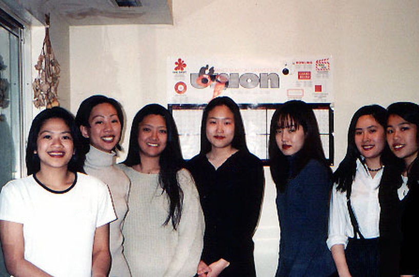
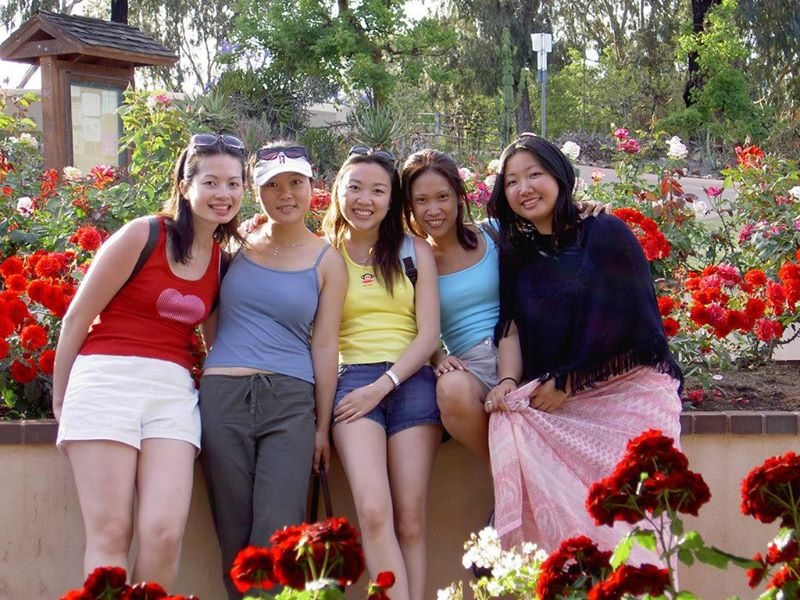

We are the Gamma Chapter of kappa Phi Lambda Sorority, Incorporated. Our seven founding mothers established the first chapter of Kappa Phi Lambda at Binghamton University on March 9, 1995.
Founding Mothers (Spring '95):

Seven extraordinary women came together to establish Kappa Phi Lambda Sorority, Inc. at Binghamton University on March 9, 1995. These seven founders: Elizabeth Choi, Karen Eng, Rei Hirasawa, Hee Cho Moon, Chae Yoo Park, Samantha Somchanhmavong, and Connie Yang united with a single vision of providing women with the chance to use their pride in their heritage to become leaders of society.
On November 16, 1997, our five chapter sisters established the third chapter of Kappa Phi Lambda, which is the first Asian-Interest sorority on the Syracuse University Campus.
Charter (Fall '97)

Gamma Chapter at Syracuse University was founded on November 16, 1997 by five diverse women with a sacred bond and a unified dream. The charters were friends first before they wanted to be sisters. It was just a random thought at the time that quickly escalated into a reality when they scouted out various sororities and came upon Kappa Phi Lambda.
They planned to bring forth the first Asian Greek organization on SU grounds. They envisioned the establishment of an organization that was going to change the norm, break cultural barriers, and most of all, make a difference. It was their loyalty and respect for one another that gave them the extra incentive to achieve their goals.
With their strength, they built a legacy that will continue to strive for the better, help the community and make a difference in the lives of others. With their love, even all the hardships that entailed for them to give birth to Gamma Chapter, made it all worth it.
Five National APIDA Panhellenic Association fraternities and sororities call Syracuse University's Multicultural Greek Council (MGC) home (NAPA). NAPA is a collection of leaders from the Asian Pacific Islander Desi American community that collaborate, educate, and advocate on behalf of their members and constituency. The highest requirements of membership ensure that university administrations have a partner in the development of the local chapters of our member organizations. We can mobilize and speak out with a single, powerful voice when issues impacting our community emerge.
Our chapter is the founding member of the Multicultural Greek Council (MGC) at Syracuse University. Throughout the year, we collaborate with our fellow council members. Sigma Beta Rho Fraternity, Inc., Lambda Phi Epsilon International Fraternity, Inc., Sigma Psi Zeta Sorority, Inc., and alpha Kappa Delta Phi International Sorority, Inc. to promote diversity on campus.
Our Sisters represent our sorority all around the world and in a variety of professions, and they have traveled widely. There are countless memories to be made thanks to the strong and friendly network of Sisters we have built.